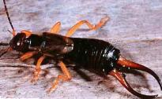
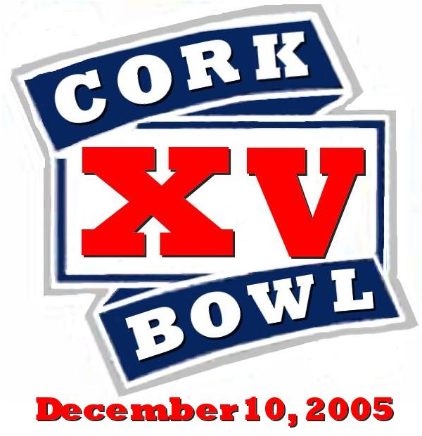

|
December 10, 2005 |
 |
 |
 |
|||||||||
|
||||||||||
Quarterback 7th Year - 5'9 - 145 Nobody ever doubted that Tony Cork could throw the ball, but skeptics always saw his struggles avoiding the rush. When the league took the rusing the passer rule out of effect, noone has thrived more than the Old Coach. In a relief role in Cork Bowl 13, Cork completed 35 of 50 passes for 9 touchdowns in just over a half of play. Cork's performance led the Dingoes to offer him a huge contract prior to Cork Bowl 14. The money was well-spent as Cork sizzled once again completing 51 of 72 passes (a record 71% completion percentage) and broke his own touchdown pass mark with 19. "I wasn't pleased when they changed the rules and I wasn't asked to play," scoffed Cork. "It's unfortunate Reggie had to get hurt for me to get in, but I wasn't going to let that opportunity pass." Despite only playing 3 entire games in his career, Cork ranks second in all major passing categories. In 2 of his 3 starts, he has put up gaudy passing numbers (102-for-155 with 37 TD's) and has filled in effectively on 3 other occasions. His only rough outing came in Cork Bowl 12 when he lost top receiver Patrick Cork in the first quarter and was unable to escape the constant rush. "The no-rush rule benefits him more than anyone to ever play the game," commented all-time leading passer Willy Truitt. "He's the most accurate passer if he has time so not having a rush at all is huge for him." Cork also doesn't have to play defense since the rosters expanded to 6 players a year ago, allowing him to focus 100% of his attention on his specialty - firing passes to receivers all afternoon. Cork will have the same group of receivers
he had for last year's record-setting performance. "I'm comfortable
with all of my receivers," added Cork. "The way I see it, they'll
need to score on every possession to keep up with us." Last year, Cork's
Dingoes were not stopped on downs the entire game scoring on 19 of their
22 possessions with the only non-scoring drives coming on 2 interceptions
and the end of the first half.
|
Quarterback 9th year - 6'4 - 185 Despite a record-shattering effort in Cork Bowl 14, Kirby Newell wasn't completely pleased with his performance. "You play to win, not to set records," commented Newell. "It will be nice to see my name on the top of the passing list, but records were made to be broken. Championships last forever." Newell blitzed the previous records for completions (51) and attempts (86) with his 62-92 totals last year that included 15 touchdowns, but it wasn't enough as his Paramecium squad came up 3 scores short. In just his second full game under center, Newell blew away his previous career highs of 42 completions and 71 attempts, however those smaller numbers resulted in a win in Cork Bowl 13. "We completed a lot of passes last year, but had trouble finishing off drives," recalled Newell. "We faced a lot of 3rd and 4th down situations which put a lot of pressure on all of us to come through every time. We didn't and it cost us." Newell moved into 4th place on the all-time passing list and has an impressive 37-to-5 touchdown to interception ration in his career. His 63% completion percentage is just slightly lower than league leader Tony Cork's 64%. "I really need all my receivers to come into the game in top shape," added Newell. "Last year some of the guys wore down in the second half and our offense suffered from it. We've got to put together a full 100 minutes this year." Newell has been suffering from leg
problems recently and knows he won't be 100% on game day, but having played
with gangrene, an infected hair and a stubbed toe in the past, everyone
expects him to be in the lineup again.
| ||||||||||||||||||||
Wide Receiver 15th Year - 5'11 1/2 - 155 Patrick Cork told everyone he wasn't on the downside of his career before last year's game, but it took an MVP performance to convince them all. "I heard the whispers about being past my prime and that I wouldn't ever perform at the level I did when I was younger," recalled Cork. "I trained harder than I ever had before knowing it was an important year for me and that hard work paid off." Following a 10-catch performance in Cork Bowl 13 after being forced from Cork Bowl 12 with just 3 receptions and a broken collarbone, Cork had something to prove in Cork Bowl 14. His 21 catch, 6 touchdown game brought back memories of the late 90's when Cork averaged 19 catches and 6 TD's a game over a 6-year span. "Probably the second biggest factor after my conditioning was having the Old Coach as my QB again," added Cork. "Nobody has ever done a better job of getting me good passes to catch than he has." Despite the impressive offensive stats, Cork's biggest influence on last year's win was forcing turnovers on defense. On the first drive of the game, Cork picked off a pass in the endzone and then made two game-altering plays in the second half intercepting another pass in the endzone and stripping Ryan Tomlinson of the ball at midfield and returning the fumble to the one yard line. "Cork Bowls are won and lost by which team causes the most turnovers," said Cork. "Look through all the years and you'll find the team that forces the most turnovers won. It had been a long time since I had made an impact on defense so it was a nice way to cap off a great win for our team." Cork increased his all-time lead in
reception (164) and touchdowns (55) last year. He and brother Chris are
the only 2 players with 100 catches and 40 touchdowns in league history.
Cork's 3 forced turnovers brought his total to 13 for his career (7 interceptions
and 6 forced fumbles). Cork has also added 10 pounds to his frame since
last year's game. "I can only assume it's all muscle....," added
Cork.
|
Wide Receiver 12th Year - 5'10 - 155 The third-longest tenured player in Cork Bowl history, Reggie Truitt has been around to see a lot. "I was responsible for chipping Garrard's tooth, for throwing the pass that made Greg run into the garage and for devising the blitzing scheme that single-handedly won Jeff Henney an MVP award," said Truitt. Entering his 12th season of play, Truitt has emerged as a go-to receiver in recent years after spending most of his early days platooning at quarterback and receiver.
Had it not been for a head-on collision with Robert Trimble's knee in Cork Bowl 13, Truitt would have four consecutive years of double-digit receptions. Truitt caught 12 passes in CB 11 and followed that up with his first MVP performance in Cork Bowl 12 finishing with 12 receptions, 5 touchdowns and and a single-game record 5 interceptions. After playing just over a quarter and a half in Cork Bowl 13, and having 6 catches, Truitt responded again last year with 10 catches and a career-high 15 tackles. "Reggie has been around long enough to learn all the nuances that go along with Cork Bowl," commented Patrick Cork. "Since moving to receiver full-time, he has learned to pace himself on offense and defense and pick his spots. At any point he has the ability to make a huge play on either side of the ball."
Reggie was without his favorite quarterback last year as brother Willy made the move to receiver after an illustrious career under center. "I have grown used to having Willy throwing me the ball, and last year we were running routes together," stated Truitt. "I definitely missed him leading us in the huddle, but Kirby played as well as anyone could have expected. We just didn't get the job done in a few key situations."
Truitt now finds himself fifth on the all-time receiving list with 70 catches and 6th in touchdowns with 21. His 98 tackles are far away the most all-time - 12 ahead of Chris Cork. His 12 interceptions are tied with Chris for most all-time as well.
|
Wide Receiver 15th Year - 6'2 - 185 As Chris Cork edges past the 30-year age mark, noone will mistake him for a speedster, but he's still as reliable and effective as he has always been. "Chris has the uncanny ability to make huge plays an opportune times," commented Patrick Cork. "He'll go three or four drives without catching a pass and then he makes a one-handed grab on the sideline for a touchdown right when his team needs it most." "I've learned to pick my spots over the years," added Chris. "Being aruond this game for as many years as I have, you learn to pace yourself learn how to bait your opponents into mental errors." Cork followed up 13 catch and 9 catch games with just 6 grabds and 3 touchdowns last year, but as always, he made those catches count. "He had a huge TD on a bomb play and made another ridiculous touchdown grab on the sideline in the 3rd quarter," said QB Tony Cork. "He's not going to demand the ball so he sometimes gets lost in the shuffle, but when you need a play made, Chris is as good of an option as anyone." Cork struggled at times guarding Brooks Wilson in last year's win as Wilson set a career-high with 21 receptions. "He was weak and took a decade off so he has fresh legs compared to most of us," opined Cork. "Plus, half his catches came in the 4th quarter after the game was decided. That's just Wilson being Wilson. Once his team is out of it, he suddenly comes alive and makes it look like he played a great game." After picking off 9 passes in 5 years
early in his career, Cork has not had an interception since Cork Bowl 11.
Despite the drought, he's still tied for 1st all-time with 12 interceptions.
His 117 catches and 45 touchdowns are 2nd only to brother Patrick.
|
Wide Receiver 7th Year - 6'1 - 172 After taking nearly a decade off, Brooks Wilson has returned in full-force in the past two years. Having not played in a Cork Bowl since Cork Bowl 5, Wilson re-emerged in Cork Bowl 13 to post career-high numbers with 14 receptions and 6 touchdowns. Then in Cork Bowl 14, Wilson exploded for 21 catches and 7 touchdowns in the Parameciums defeat. "To say we were happy with Wilson the past two years would be a huge understatement," responded Willy Truitt. "I don't think anyone could have expected him to come back after all those years and become our team's best receiver. It's quite a story."
Wilson was one of Cork Bowl's founding fathers and played nearly every year through 1995. However, when the kids started popping up all around him, his Cork Bowl days appeared to be over. "I took some time away from the game to clear my head," added Wilson. "What nobody realized was that I was turning myself into a physical machine with the sole purpose of dominating Cork Bowl for years to come."
"Brooks was amazing last year," added quarterback Kirby Newell. "He was my go-to guy most of the game, especially in the 4th quarter. He was our best-conditioned player and was still going strong late in the game. He didn't drop any passes and played suffocating defense on Chris all day long." Wilson's 21 catch game moved him into 8th all-time in receiving with 54 receptions, just one behind 7th place Josh Williamson (55) and five behind 6th place Kevin Ryan (59)
Despite Wilson's re-emergence, there is something missing from his long career - a Cork Bowl victory. Since the league records do not have results for Cork Bowls 1-3, there is a chance Wilson picked up a win early in his career, but his official record stands at 0-3. "I know we won a few of those years, but if isn't official then it doesn't really matter I guess," said Wilson. His long time rivalry with Chris Cork continues to boil even after the long layoff. "I think it's fitting that Wilson has a big "0" in the win column for his career," laughed Chris Cork. "I guess it shows that cheap-shotting opponents doesn't pay off."
|
Wide Receiver 10th Year - 5'7 - 145 Once a punchline, Greg Howard has cemented himself as one of the top players in the game. Over his first 5 years, Howard steadily improved including a 12 catch, 7 touchdown performance in Cork Bowl 10. However, just as Howard was beginning to become a top option, he had just 4 catches and 2 catches in Cork Bowls 11 and 12, including a myriad of dropped passes and suddenly his rise to the top was in question. "I really struggled on offense for a couple years," recalled Howard. "But I never once doubted my abilities." Howard's confidence showed in Cork Bowl 13 when he exploded for 15 catches and 5 touchdowns, and added 12 tackles on defense to garner his first MVP award. Last year, Howard proved the MVP performance was no fluke as he posted a career high 18 receptions and added 6 touchdowns to share MVP honors with Patrick Cork. Even with the gaudy offensive stats, it was Howard's defense that really opened eyes. Howard had become a defensive force in recent years, but his 26 tackle effort in Cork Bowl 14 was surely not expected. "I have never seen an individual effort like that in all my years around this game," praised Tony Cork. "He was like a middle linebacker running from sideline to sideline making every tackle." "We basically did the same thing the year before," added Patrick Cork. "We got a lead, dropped back in a zone with Greg in the middle, and let him roam free and make tackles. We just didn't realize he was going to make every tackle." Howard had an amazing 11 tackles in the 4th quarter alone. Howard's conditioning has been the most important factor in his ascent to stardom. "He never gets tired," added Willy Truitt. "When everyone else is struggling in the 2nd half, Greg's still at 100%. That's huge in close games." Howard holds the best win-loss record
in Cork Bowl history at 7-2 including 4 straight wins and 7 of his last
8.
|
Wide Receiver 11th Year - 5'9 - 145 For the first time since 1995, a Cork Bowl was played last year without a pass thrown by Willy Truitt. "It was definitely weird to not see him firing passes all day," recalled Patrick Cork. "For basically a decade, you could count on seeing Willy thrown 15 touchdowns every year."
Truitt made his career under center compiling ridiculous numbers at the quarterback position from Cork Bowl 6 through Cork Bowl 13. Over that span, Truitt completed 271-of-472 passes for 105 touchdowns. He also ran for 13 more scores and won 5 Cork Bowl rings as a QB. However, after brother Reggie was knocked from the game in Cork Bowl 13, Willy moved to receiver for the last 2 1/2 quarters and showed he could do more than just throw. Truitt totaled 12 catches and 3 touchdowns that year and followed it up with a 14-catch, 3 touchdown performance last year - his first as a full-time receiver since his rookie year in 2002.
"I missed playing QB not only because I love to throw the ball, but all that running as a receiver is really tiring," commented Truitt. "It gives you an appreciation for what guys like Chris and Patrick have done playing their entire careers as a wideout. You really have to learn to pick your spots and not get burned out early in the game. That's something I'll learn over the next few years."
Truitt was Newell's second-favorite target last year and showed a great knack of turning short passes into big gains. "Most of his best plays were taking short crossing routes and turning them into first downs and touchdowns," added Newell. "There weren't many dropped passes that I can remember which is impressive considering how long it had been since he'd played receiver."
So will Cork Bowl ever see Willy Truitt at quarterback again? "Nothing is out of the question," replied Truitt. "I would go back to quarterbacking in a second if my team needed me to. But with Coach and Kirby quarterbacking now, the league is doing fine without me there. If either of them can't play though, you can bet I'll be stating my case to get back under center."
|
Tight End 10th Year - 5'11 - 155 After winning just one time in his first five Cork Bowls, Kevin Ryan had grown accustomed to coming up on the short end. However, after winning 3 of his last 4 Cork Bowls, Ryan has shaken the stigma that had been attached to his career resume. "We lost so many close games early in my career," said Ryan. "It was really frustrating never being able to get over that hump. I lost 3 straight years by a total of 6 scores, but it appears those losing days are finally behind me." After starting his career with a 1-4 record, Ryan's mark now stands at a very respectable 4-5.
Known best for his bruising running after the catch, Ryan hasn't been able to get much momentum built following his near-MVP performance in Cork Bowl 11. Ryan caught a career high 13 passes that year, but has just 18 total receptions in the three years following. "I had a couple drops, but mostly I haven't been able to get open with room to run in front of me," added Ryan. "If I can get some open ground in front of me, I like my chances of being able to make some big plays."
Ryan has been one of the main people that has suffered from the emergence of Greg Howard as a top receiving threat. Howard's 33 catches the past two years meant there were less passes heading Kevin's way. "That's something that all of us veterans understand," added Ryan. "We were bound to have some young guys start putting up good numbers eventually. If Greg getting some more catches means my team getting another win, I'll take that any day."
Ryan ranks 6th all-time in receiving with 59 catches and fifth in touchdowns with 24. He added a career high 8 tackles in last year's victory as well bringing his career total to 45.
|
Wide Receiver 9th Year - 6'0 - 165 Nobody has drawn more criticism and abuse over the years than Ryan Tomlinson, and most of it seemed to carry weight. After a rookie campaign that resulted in 11 receptions and 2 touchdowns, Tomlinson never approached those numbers again and it appeared he may never do so until last year's Cork Bowl. After averaging a dismal 4.5 catches per game over the next 6 years, Tomlinson seemingly returned to his rookie days hauling in 10 passes and scoring twice in Cork Bowl 14.
Tomlinson apparently needed a change in scenery at the quarterback position as Kirby Newell looked to him early and often throughout the game to make big catches. "I've been telling people for years that if I got the right quaterback on my team I would put up numbers like I did my rookie year," answered Tomlinson. "Nobody believed me until last year when Kirby and I got going."
Although the 10 catches were nice to see for the Parameciums, there were still some concerns including a handful of dropped passes, a costly fumble at midfield and the fact that Tomlison didn't record a single tackle in the game. "He still has some things to work out," added Newell. "To see him have more catches than Chris and Kevin and the same number as Reggie is very encouraging. What we have to do now is work out the other areas in his game this year and hope he his offense doesn't suffer in the process."
Tomlinson does rank 9th in all receiving categories, and after going the first 6 years of his career without a single interception, he has picked off passes in each of the last two games.
| ||||||||||||||||
Defensive Replacement 3rd Year - 5'6 - 140 In what would have to be considered as a "first time for everything" moment two years ago, Jake Hoalt came out from behind the video camera and onto the field in Cork Bowl 13 when Reggie Truitt had to leave the game just before halftime. Hoalt played as a defensive replacement and showed so much promise that he was brought back last season for his first full Cork Bowl. It turned out to be a great move for the Zo'ril as Hoalt tallied 14 tackles on the defensive side of the ball. In the second half, Hoalt was used off and on as a receiver as well and finished the game with 7 receptions. "The energy and solid play Jake gave us last year played a huge part in how well we played," remarked last year's QB Kirby Newell. "His sure tackling was a very pleasant surprise and who knew we would get 7 catches out of him too?"
Hoalt will be replacing legendary Cork Bowler Brian Garrard who will miss this year's game with a hamstring injury. "I plan on doing exactly what I did last year," said Hoalt. "Whatever the team needs from me I'll do - whether that's offense or defense, it doesn't matter." The Mongeese will likely use Hoalt mostly on defense, but with his success at receiver last year and continual aging of the veteran players, chances are Hoalt will get plenty of time on the offensive side of the ball as well. "Garrard was involved in two of the biggest plays of last year's game," added Patrick Cork. "If Jake can provide the same type of spark that G did, we'll be in great shape. We will surely miss the veteran presence that Brian gave us, but maybe we replace that with Jake's fresh legs."
|
Defensive Replacement 3rd Year - 5'10 - 145 Following an outstanding performance in Cork Bowl 13 for the Grisons as their defensive replacement, the future looked bright for Robert Trimble. However, Trimble followed the money instead of his heart as he accepted a one-year deal to play in Mexico in 2004 - a decision he has regretted ever since. "I was young and didn't know what I was doing," said Trimble. "I saw the dollar signs and bolted. I won't be making that same mistake again though."
In Cork Bowl 13, Trimble became the league's first ever defensive replacement - filling in for quarterback Kirby Newell. His presence was felt immediately as he intercepted a pass early in the first quarter, and knocked Reggie Truitt from the game on the same play. Trimble went on to finish the game with 10 tackles and an interception, and deflected a handful of other passes as well. "He was our defensive MVP that year," commented former teammate Patrick Cork. "He played better than any of us could have expected."
Trimble could be utilized on offense as well to spell the veteran receivers on his squad. "I'm willing to do whatever it takes for us to win," added Trimble. "If that means playing some offense along the way that's even better." Trimble did catch a pair of passes in Cork Bowl 12 when filling in for the injured Patrick Cork so he has some experience on that side of the ball as well. "If he contributes 6-8 catches and plays defense the way he did two years ago, that may be enough to put us over the top," added Kirby Newell.
| ||||||||||||||||